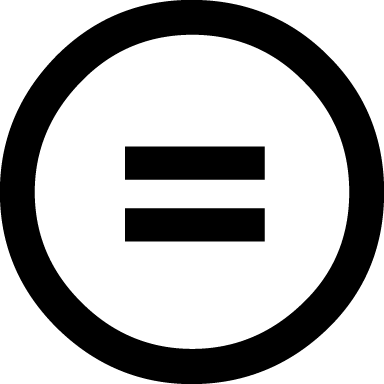
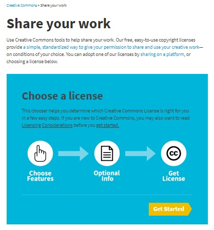
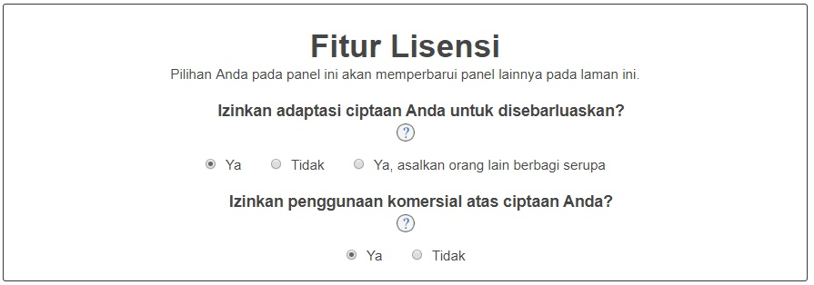
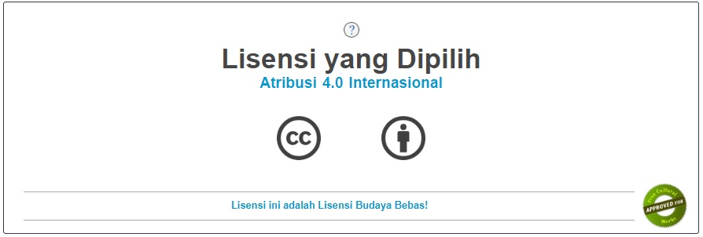
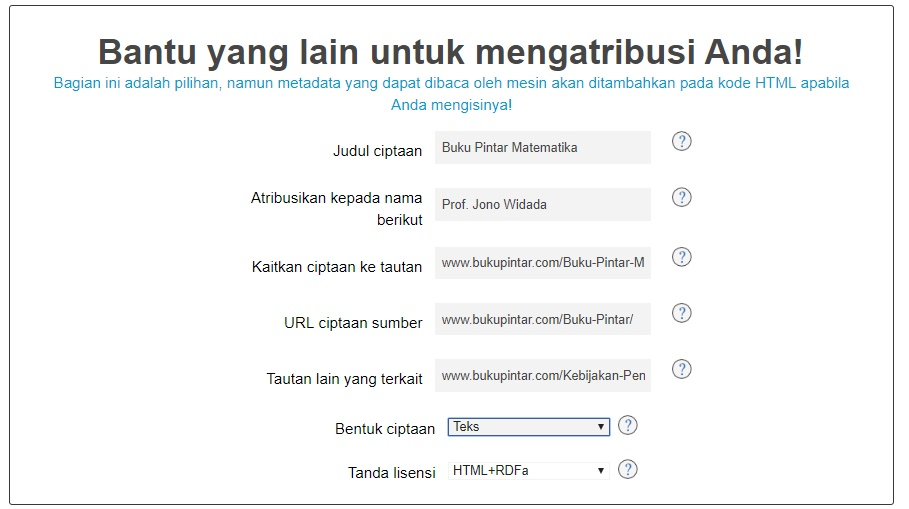
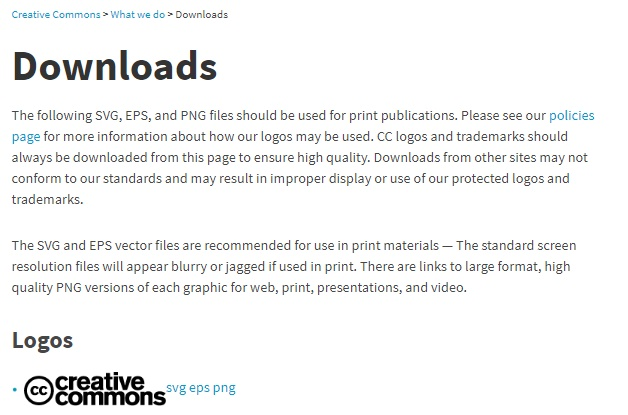
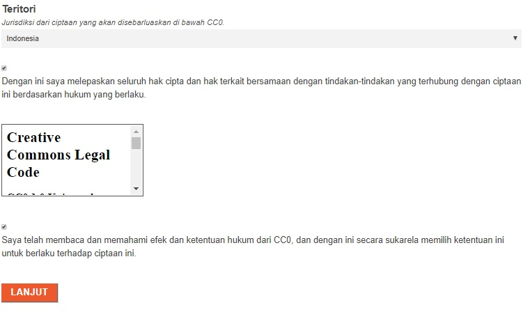
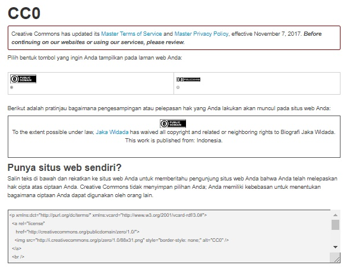
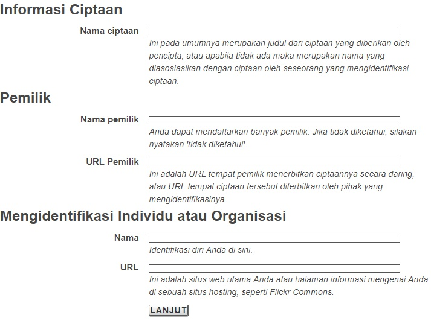
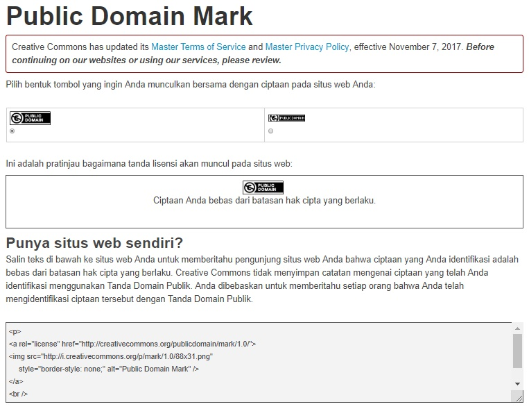

Lokakarya Lisensi Creative Commons Untuk Seminar Nasional Relawan Jurnal Indonesia di Universitas Islam Negeri Sunan Gunung Jati

Pada tanggal 24 Agustus 2018, Creative Commons Indonesia (CCID) yang diwakili oleh Hilman Fathoni (Legal Lead CCID berkesempatan menyampaikan materi tentang lisensi Creative Commons (lisensi CC) bekerjasama dengan Relawan Jurnal Indonesia (RJI) pada perhelatan Seminar Nasional RJI di Universitas Islam Negeri Sunan Gunung Jati, Bandung. Paling tidak hingga saat ini terdapat 1355 judul jurnal dari penerbit Indonesia di Directory of Open Access Journal (DOAJ). 559 di antaranya menerapkan ketentuan lisensi terbuka Creative Commons yang paling bebas, CC BY (Atribusi). Dalam ekosistem publikasi karya ilmiah daring yang semakin terbuka, para penulis maupun penerbit dituntut untuk memahami mekanisme perlindungan hak cipta terhadap artikel-artikel yang diterbitkan. Dalam konteks tersebut, CCID berusaha memberikan pemahaman mengenai pelisensian ciptaan dan manajemen hak cipta antara penulis dan penerbit.
Isi materi presentasi dalam artikel ini merupakan hasil pengembangan dari materi presentasi asli yang disampaikan pada saat acara berlangsung.
Landasan Hukum Lisensi Creative Commons di Indonesia
Berikut adalah beberapa bagian dari Undang-Undang No. 28 Tahun 2014 Tentang Hak Cipta yang menjadi dasar berlaku lisensi CC di Indonesia: (Klik setiap judul bagan peraturan untuk membandingkan penafsiran kami dengan bunyi dari peraturan tersebut)
-
Angka 20 Ketentuan Umum Undang-Undang Hak Cipta Menurut Angka 20 Ketentuan Umum UUHC 2014, lisensi hak cipta adalah sebuah izin tertulis yang berfungsi sebagai pemberitahuan oleh pencipta atau pemegang hak cipta kepada pengguna ciptaan mengenai pelaksanaan hak dan kewajiban dari aktivitas penggunaan suatu ciptaan. Intinya, izin tersebut menyatakan apa yang boleh dan tidak boleh dilakukan oleh pengguna ciptaan terhadap suatu ciptaan.
(1) Lisensi CC merupakan perjanjian lisensi dalam bentuk tertulis untuk mengatur serangkaian perbuatan antara pihak-pihak yang terikat pada perjanjian lisensi tersebut; (2) Perjanjian lisensi CC habis masa berlakunya sesuai dengan ketentuan masa berlaku perlindungan hak cipta yang diatur UU; (3) Setiap ketentuan perjanjian lisensi CC tidak mengatur mengenai besaran royalti, karena memang tidak diwajibkan oleh ketentuan pasal ini. Ketentuan mengenai hal tersebut biasanya dijabarkan dalam dokumen yang berbeda, yang bukan merupakan bagian terpisah dari perjanjian lisensi yang disepakati oleh para pihak.
-
Pasal 81 Penentuan ketentuan lisensi CC dapat dilaksanakan secara mandiri oleh pihak pencipta atau pemegang hak cipta sesuai dengan bunyi pasal ini.
-
Pasal 82 ayat (1)-(3) (1) Ketentuan lisensi CC tidak mengandung unsur yang merugikan ekonomi negara. Hal ini dapat berlaku hanya jika ada pilihan lisensi CC yang diterapkan pada suatu perjanjian yang mengandung unsur yang merugikan keuangan negara (2) Isi ketentuan lisensi CC tidak bertentangan dengan ketentuan UU di Indonesia. (3) Ketentuan lisensi CC tidak menghilangkan perlindungan hak cipta atas ciptaan seseorang atau kelompok pencipta atau pemegang hak cipta juga bukan merupakan sarana pengalihan hak cipta.
Lisensi CC, juga lisensi terbuka lainnya yang diterapkan di Indonesia, dikecualikan dari kewajiban pencatatan lisensi sesuai dengan berita berikut ini.
Tentang Ketentuan Lisensi Creative Commons
CC adalah organisasi nirlaba yang berpusat di Mountain View, Kanada. Organisasi ini berupaya mengembangkan serangkaian lisensi hak cipta yang terbuka dengan tujuan memudahkan aktivitas berbagi konten di ranah daring. Selain itu CC juga menyediakan teknologi untuk menunjang penyebarluasan dan pemanfaatan konten berlisensi CC, seperti CC Search. Lisensi CC memungkinkan pencipta mempertahankan hak ciptanya sambil membuka akses terhadap ciptaanya kepada banyak pengguna.
Lisensi CC terdiri atas 4 spektrum pilihan yang dapat dikombinasikan menjadi 6 pilihan lisensi. 6 pilihan lisensi yang ada dapat menjadi petunjuk bagi para pengguna ciptaan tentang tingkat kebebasan penggunaan ciptaan yang hendak mereka gunakan. Selain disajikan dalam penjelasan teks yang sederhana, isi ketentuan tiap pilihan lisensi diwakili dengan tombol-tombol yang melambangkan spektrum perlindungan yang dipilih. Keberadaan tombol-tombol ini dimaksudkan untuk menyederhanakan Bahasa hukum dan memudahkan dialog antara dalam komunikasi antara pencipta dengan publik pengguna.
Dengan tersedianya pilihan, maka pencipta atau pemegang hak cipta dapat memilih ketentuan lisensi yang paling sesuai dengan maksud penyediaan ciptaannya. Misalnya, ia ingin memberikan izin kepada pengguna ciptaan untuk menggubah dan memanfaatkan ciptaan dalam kepentingan komersial, maka ia dapat memilih ketentuan lisensi yang paling bebas. Di sisi lain pengguna ciptaan juga dapat memilih ciptaan berdasarkan ketentuan lisensi yang diterapkan sesuai dengan kebutuhan penggunaannya. Memahami perbedaan mendasar lisensi tertutup dan terbuka dapat memudahkan pengguna ciptaan untuk mengetahui mana ciptaan yang gratis saja dan mana ciptaan yang gratis dan terbuka. Maksud dari kata terbuka ialah penyedia (pencipta atau pemegang hak cipta) ciptaan-ciptaan tersebut memberikan legitimasi kepada pengguna ciptaan untuk turut serta merasakan manfaat yang biasanya hanya dapat dirasakan oleh pencipta atau pemegang hak cipta secara eksklusif, manfaat komersial contohnya.
Dalam ranah publikasi karya ilmiah daring, ketentuan lisensi yang paling memberikan kebebasan kepada pengguna ciptaan menjadi alat ukur yang menentukan apakah ciptaan tersebut masuk dalam kategori “Open Access” atau tidak.
Sebelum menerapkan lisensi CC pada ciptaan, pencipta atau pemegang hak cipta diharapkan memahami beberapa pertimbangan penerapan lisensi ini terlebih dahulu:
- Ketentuan lisensi yang diterapkan tidak dapat dicabut (irrevocable);
Misalnya, ciptaan yang pertama kali diumumkan dengan izin penggunaan untuk kepentingan komersial kepada pengguna ciptaan dicabut ketentuan lisensinya dan diganti dengan ketentuan lisensi yang bertolak belakang dari ketentuan lisensi sebelumnya. Penerima lisensi dari ketentuan sebelumnya akan terikat dengan ketentuan lisensi yang baru dalam setiap penggunaan ciptaan setelah ketentuan tersebut berlaku. Ketentuan ini ada untuk menghindari terjadinya sengketa dengan asumsi bahwa ciptaan sudah digunakan dan disediakan di berbagai tempat yang berbeda oleh berbagai pengguna. Pengguna yang merujuk ketentuan lisensi pada saat ciptaan tersebut pertama kali diumumkan. Asumsi lain ialah informasi tentang berubahnya ketentuan lisensi belum tentu sampai ke semua pengguna ciptaan yang merujuk pada ketentuan lisensi sebelumnya.
Tentu saja risiko sengketa ini tidak berlaku pada perbuatan yang terjadi di masa lampau (sebelum ketentuan lisensi baru berlaku). Pembicaraan selesai karena dalam konteks hukum Indonesia (asas non-retroaktif) tidak memungkinkan adanya gugatan terhadap pelanggaran hukum sebelum sebuah peraturan atau suatu ketentuan berlaku. Maka dari itu, pengubahan ketentuan lisensi menghadirkan risiko nyata bagi pengguna ciptaan yang tidak menerima informasi mengenai pengubahan ketentuan lisensi dengan baik. Sengketa yang berakar dari kesalahpahaman sangat bisa terjadi apabila pencipta atau pemegang hak cipta menemukan penggunaan ciptaan yang menyalahi ketentuan lisensinya yang baru karena pengguna ciptaan tersebut masih merujuk ketentuan yang lama dari tempat ia mengakses ciptaan tersebut.
Hal ini menjadi alasan fundamental CC untuk tidak merekomendasikan pengubahan/pencabutan ketentuan lisensi CC yang sudah diterapkan. Meskipun bukan berarti pencipta atau pemegang hak cipta dilarang sama sekali untuk mengubah atau mencabut ketentuan lisensi yang sudah diterapkan dengan akibat hukum sebagaimana disebutkan di atas. Namun yang menjadi pertimbangan adalah ketika pemberi lisensi mengganti “isi perjanjian” yang mereka perjanjikan dengan penerima lisensi merupakan hal yang tidak etis. Kecuali, pemberi lisensi dapat menjamin atau mengurangi risiko sengketa dengan menarik ciptaan dari peredaran sama sekali atau mengumumkan pengubahan ketentuan lisensi tersebut seluas mungkin.
- Pastikan ciptaan dapat dilisensikan dengan lisensi CC;
Lisensi CC hanya berlaku pada obyek perlindungan hak cipta saja (lihat pasal 40 Undang-Undang No. 28 Tahun 2014 Tentang Hak Cipta). Meskipun lisensi CC terinspirasi oleh lisensi seperti GNU General Public License, program komputer dikecualikan sebagai obyek penerapan lisensi CC. Karena ketentuan lisensi CC, baik lisensi ringkas maupun lisensi lengkap, tidak sesuai untuk diterapkan pada program komputer. Hal-hal mengenai ketentuan penggunaan serta perlindungan program komputer sebagai konten terbuka secara spesifik dapat ditemukan pada lisensi terbuka yang sebelumnya sudah populer diterapkan pada program komputer, contoh lain selain GNU adalah MIT License. Dalam lisensi-lisensi tersebut dipaparkan secara spesifik bagaimana pengguna program komputer sebagai penerima lisensi dapat menggunakan bagian-bagian (misalnya, kode sumber porgram komputer) program komputer.
- Tandai ciptaan dengan ketentuan lisensi yang sesuai;
Seorang pencipta atau pemegang hak cipta dapat menerapkan ketentuan lisensi yang berbeda pada ciptaan yang berbeda pada satu tempat di mana pihak tersebut menyediakan ciptaan. Misalnya, pihak tersebut dapat menerapkan ketentuan lisensi A pada ciptaan teks A, kemudian lisensi B pada ciptaan karya fotografi A, dan ketentuan lisensi C pada ciptaan lain yang tersedia di tempat pihak tersebut menyediakan ciptaan-ciptaannya. Fungsi dari penandaan ini ialah untuk memberikan pemberitahuan ciptaan secara spesifik bahwa beberapa ciptaan di tempat tersebut dikecualikan dari satu ketentuan lisensi yang pada dasarnya diterapkan pada seluruh ciptaan di tempat tersebut. Selain itu, penandaan ini juga biasanya dilakukan sebagai penerapan atribusi ciptaan pihak lain yang menerapkan ketentuan lisensi yang berbeda.
- Ciptaan yang dilisensikan harus merupakan ciptaan sendiri, atau diizinkan oleh pencipta atau pemegang hak cipta lain untuk melisensikan ciptaan dengan lisensi CC;
Seorang pengguna ciptaan di dalam jaringan bisa saja mengunggah suatu ciptaan yang bukan miliknya untuk diumumkan melalui suatu situs web. Jika pencipta atau pemegang hak cipta ciptaan tersebut belum menyatakan ketentuan penggunaan dengan suatu ketentuan lisensi, pengguna ciptaan tidak dapat menerapkan suatu ketentuan lisensi pada ciptaan yang diunggahnya. Untuk dapat melaksanakan hal tersebut, pengguna ciptaan harus memperoleh izin sekaligus pernyataan terlebih dahulu dari pencipta atau pemegang hak cipta seperti sistem OTRS di Wikimedia Commons berikut ini. Selain itu, seseorang dapat menerapkan ketentuan lisensi pada suatu ciptaan selama ciptaan tersebut merupakan ciptaannya.
- Tentukan ketentuan penggunaan ciptaan yang hendak diterapkan;
Faktor ini merupakan hal yang mendasar sebelum suatu pihak menjadi pemberi lisensi CC. Calon pemberi lisensi harus memahami fungsi pemilihan ketentuan lisensi terlebih dahulu. Misalnya dengan membaca laman penjelasan 4 spektrum ketentuan atau hasil kombinasinya yaitu 6 pilihan lisensi CC. Dengan memahami hal ini, pemberi lisensi dapat menerapkan ketentuan lisensi CC yang sesuai dengan kemauannya pada ciptaannya.
- Setiap ciptaan berlisensi CC dapat langsung digandakan dan disebarluaskan;
Hal ini sejalan dengan logika penyediaan ciptaan di dalam jaringan. Karena pada dasarnya setiap ciptaan yang dapat diakses secara terbuka di ranah daring dapat langsung digandakan dan disebarluaskan. Maka dari itu lisensi CC memberikan legitimasi secara tertulis sebagai landasan hukum pengguna ciptaan (penerima lisensi) pada aktivitas-aktivitas tersebut.
- Penerapan Digital Rights Management dilarang untuk ciptaan berlisensi CC;
Sebagaimana disebutkan dalam poin sebelumnya, lisensi CC memungkinkan pengguna ciptaan untuk memperoleh izin langsung untuk menggandakan dan menyebarluaskan ciptaan. Digital Rights Management (DRM) atau sarana kontrol teknologi adalah teknologi perlindungan ciptaan yang dapat menghambat pengguna ciptaan untuk menggunakan ciptaan, misalnya dalam hal penggandaan dan penyebarluasan ciptaan. Misalnya, pencipta atau pemegang hak cipta menutup akses untuk pengunduhan ciptaan yang diunggah di dalam jaringan. Maka dari itu, model perlindungan ini tidak relevan untuk diterapkan pada ciptaan berlisensi CC.
4 spektrum pilihan lisensi CC yang dimaksud adalah:
4 spektrum utama lisensi CC:
(1) Spektrum Atribusi (BY)

-
Isi ketentuan:
-
Kewajiban untuk menyebutkan nama pencipta atau pemegang hak cipta dan sumber ciptaan.
-
Menyatakan perubahan yang dilakukan terhadap ciptaan.
-
-
Fungsi:
-
Supaya pencipta atau pemegang hak cipta dapat terus disebutkan namanya sebagai sumber rujukan dalam setiap penggunaan.
-
Untuk mengingatkan pengguna agar terus menyebutkan sumber ciptaan yang digunakan dengan sesuai.
-
Untuk mengingatkan pengguna agar menyatakan perubahan yang dilakukan terhadap ciptaan.
-
-
Kombinasi Spektrum:

-
Contoh penerapan:
-
Situs web Portal Data Indonesia (CC BY)
-
Situs web ikon The Noun Project (CC BY)
-
(2) Spektrum BerbagiSerupa (SA)

-
Isi ketentuan:
- Kewajiban untuk menerapkan lisensi yang sama pada setiap hasil gubahan dan karya turunan
-
Fungsi:
-
Tujuan penciptaan dan penyediaan ciptaan memang ditujukan sebagai ciptaan layak gubah.
-
Untuk mempertahankan maksud penerapan lisensi pada materi asli oleh pencipta.
-
-
Kombinasi Spektrum:


-
Lisensi CC BY-SA (Atribusi-BerbagiSerupa) dan Lisensi CC BY-NC-SA (Atribusi-NonKomersial-BerbagiSerupa)
-
Contoh penerapan:
-
Situs web Wikipedia (CC BY-SA)
-
Situs web Wikimedia Commons (CC BY-SA)
-
(3) Spektrum NonKomersial (NC)

-
Isi ketentuan:
-
Larangan penggunaan ciptaan untuk kepentingan komersial.
-
Kegiatan nirlaba dikecualikan dari ketentuan ini.
-
-
Fungsi:
-
Mempertahankan jalur masuknya royalti secara eksklusif ke pencipta atau pemegang hak cipta.
-
Ketentuan SA yang dikombinasikan dengan NC, memastikan bahwa setiap hasil gubahan menerapkan ketentuan NonKomersial, supaya ciptaan tidak dapat dikomersialisasi tanpa izin pencipta atau pemegang hak cipta.
-
-
Kombinasi Spektrum:


-
Lisensi CC BY-NC (Atribusi-NonKomersial), Lisensi CC BY-NC-SA (Atribusi-NonKomersial-BerbagiSerupa), dan Lisensi CC BY-NC-ND (Atribusi-NonKomersial-TanpaTurunan)
-
Contoh penerapan:
(4) Spektrum TanpaTurunan (ND)

-
Isi ketentuan:
-
Larangan untuk mengubah dan menggubah ciptaan.
-
Penggunaan pribadi dikecualikan (pengubahan atau penggubahan yang tidak diumumkan).
-
-
Fungsi:
-
Menghindari manipulasi atau pemanfaatan ciptaan secara tidak bertanggung jawab.
-
Menghindari pelanggaran kehormatan terhadap pencipta atau pemegang hak cipta dari aktivitas pengguna ciptaan.
-
-
Kombinasi Spektrum:

-
Lisensi CC BY-ND (Atribusi-TanpaTurunan) dan Lisensi CC BY-NC-ND (Atribusi-NonKomersial-TanpaTurunan).
-
Contoh penerapan:
- Situs web Katadata (CC BY-ND)
Berikut ini adalah penjelasan cara menerapkan lisensi CC pada ciptaan:
(1) Kunjungi creativecommons.org/share-your-work/

(2) Klik tombol “Get Started”

(3) Isi formulir pemberian izin kepada pengguna ciptaan sesuai dengan keinginan

(4) Mesin akan menampilkan ketentuan lisensi yang sesuai dengan apa yang pencipta atau pemegang hak cipta isi pada formulir pemberian izin

(5) Lengkapi atau modifikasi ketentuan atribusi yang dibebankan kepada pengguna ciptaan

(6) Lisensi dapat ditempelkan pada situs web dengan memasang kode html yang tersedia

(6.5) Pengguna ciptaan dapat membaca isi ketentuan lisensi yang dipilih pencipta atau pemegang hak cipta dengan membuka tautan yang dipasang pada teks lisensi di bawah gambar pilihan lisensi yang diterapkan


(8) Pengguna ciptaan dapat memilih bahasa apa yang ditampilkan pada ketentuan lisensi yang diterapkan
(9) Tampilan laman untuk menggunakan CC0 Dedikasi Domain Publik dan Tanda Domain Publik CC

(10) Isi kolom jawaban formulir sesuai dengan pertanyaan yang diajukan

(11) Baca kemudian tandai pernyataan pendedikasian hak cipta ke domain publik

(12) Konfirmasi sikap pendedikasian hak cipta ke domain publik sampai akhir

(13) Pemberitahuan pendedikasian hak cipta ke domain publik dapat ditempelkan pada situs web dengan memasang kode html yang tersedia

(14) Isi kolom jawaban formulir sesuai dengan pertanyaan yang diajukan

(15) Tanda domain publik dapat ditempelkan pada situs web dengan memasang kode html yang tersedia

Tentang Penerapan Lisensi Creative Commons Di Ranah Publikasi Karya Ilmiah Daring oleh Penerbit Jurnal
Penerbitan karya ilmiah daring adalah serangkaian proses yang melibatkan aktivitas pengiriman dan/atau pemilihan artikel ilmiah, termasuk upaya penerbitan artikel pracetak secara mandiri baik di kanal pribadi maupun bersama. Saat artikel yang dikirimkan oleh penulis telah memenuhi persyaratan yang diajukan penerbit, misalnya telah selesai ditinjau oleh beberapa peninjau sesama peneliti yang memiliki kompetensi dalam bidang terkait, maka setelah itu artikel dipublikasikan oleh penerbit jurnal terkait. Baru setelah itu artikel turut serta diindeksasi di situs web-situs web pengindeksan jurnal seperti Scopus atau DOAJ.
Seperti yang telah disinggung pada awal artikel ini, situs web-situs web penerbit jurnal, khususnya yang ada di Indonesia, telah menerapkan prinsip Open Access dengan memasang perangkat Open Journal System di situs webnya. Perangkat ini memudahkan pengelola penerbitan jurnal dalam membuat templat kebijakan-kebijakan penerbitannya, khususnya kebijakan keterbukaan akses. Yang dimaksudkan dengan kebijakan keterbukaan akses dalam hal ini adalah bagaimana pihak penerbit dapat memberikan pilihan kepada penulis untuk mengalihkan hak ciptanya atau tidak dalam perjanjian penerbitan. Juga memberi tahu apakah para penulis dapat memilih ketentuan lisensi hak cipta yang ingin mereka terapkan pada karya tulisnya, atau pemberitahuan bahwa penerbit menerapkan kebijakan lisensi tunggal (one license policy) yang wajib diikuti oleh penulis.
Contoh terbaik pemberian nuansa demokratis di ranah manajemen hak cipta penulis dalam aktivitas penerbitan karya ilmiah daring dapat dirujuk dari contoh berikut ini:


- Tentang kebijakan pengarsipan mandiri oleh penulis Sebagai penerbit, hendaknya kebijakan pengarsipan mandiri (self archiving) diterapkan dan dijelaskan pada laman article submission atau dengan membuat laman resources untuk penulis yang memuat penjelasan tersebut. Hal ini diperlukan untuk menghindari kesalahpahaman jika penulis hendak mengumumkan karya tulis tersebut di tempat lain, situs webnya sendiri atau layanan media sosial misalnya. Atau misalnya untuk menetapkan ketentuan embargo yang melarang pencipta untuk melakukan pengarsipan mandiri dalam kurun waktu tertentu. Namun, untuk menghadirkan pelayanan yang baik dan mendukung visibilitas serta dampak karya tulis para penulis, hendaknya penerbit membebaskan penulis untuk melaksanakan pengarsipan mandiri dan tidak menerapkan kebijakan embargo. Mungkin dalam hal ini, jika ingin mengecualikan sesuatu ialah menjabarkan bahwa artikel yang dapat diarsipkan secara mandiri hanya teks versi sebelum diterbitkan saja (pre-print), bukan teks dalam format yang sudah dipublikasikan melalui penerbit.

- Informasi perbedaan antara pengalihan hak cipta dan pelisensian ciptaan
Sebagai penerbit, ada baiknya juga untuk memberikan penjelasan, atau bahkan kesempatan, kepada penulis tentang perbedaan antara pengalihan hak cipta (Copyright Transfer) dengan pelisensian ciptaan (Licensing). Lihat Contoh dokumen perjanjian hak cipta & Contoh dokumen pernyataan pelisensian kembali karya oleh penerbit (Wiley) barikut ini. Wiley berusaha menjelaskan hal tersebut dalam laman resources khusus untuk para penulis, sekaligus memberikan contoh format dokumen pengalihan hak cipta dari penulis kepada penerbit. Pengalihan hak cipta adalah pembagian peran sebagai pemegang hak cipta atas karya tulis dengan penerbit. Artinya penerbit sama-sama memiliki hak eksklusif untuk mengontrol di mana saja artikel dapat diumumkan dan digunakan dalam model penggunaan apa saja. Pelisensian karya yang dituangkan dalam sebuah surat pernyataan pemberian izin pelisensian kembali kepada penerbit memiliki maknya yang berbeda. Melisensikan karya berarti hanya memberikan izin kepada penerbit untuk mengumumkan karya dengan ketentuan lisensi yang dipilih, tanpa membagikan peran sebagai pemegang hak cipta kepada penerbit. Mekanisme ini secara otomatis mempertahankan seluruh kontrol eksklusif hak cipta atas karya tulis pada pihak penulis. Lisensi CC setidaknya sudah diterapkan pada lebih dari 3 juta karya ilmiah yang didiseminasikan secara daring. Petunjuk pemilihan lisensi atau isi ketentuan lisensi sangat direkomendasikan untuk ditampilkan oleh pihak penerbit agar penulis dapat mengerti akibat hukum dari lisensi yang akan diterapkan pada karya ilmiahnya.

Tentang Penerapan Lisensi Creative Commons Di Ranah Publikasi Karya Ilmiah Daring Dalam Konteks Indeksasi dan Kualifikasi di DOAJ
Agar dapat memajukan semangat keterbukaan akses pada karya ilmiah (open access), DOAJ sebagai situs web indeksasi jurnal, menetapkan dua macam reputasi jurnal di ranah tersebut. Jurnal bereputasi baik di ranah ini akan mendapatkan gelar bernama DOAJ Seal. Sedangkan jurnal yang tidak dapat secara penuh menerapkan prinsip open access akan mendapatkan gelar DOAJ Green Thick. Tentu saja untuk memperoleh gelar-gelar ini DOAJ mensyaratkan beberapa hal, yang diantaranya menyangkut tentang penerapan lisensi dan manajemen hak cipta penulis. Berikut penjelasan masing-masing poin persyaratan DOAJ Seal yang berkaitan dengan lisensi dan manajemen hak cipta penulis.

(4) Informasi lisensi hak cipta CC terbaca mesin
Untuk mendapatkan gelar DOAJ Seal, hendaknya pihak penerbit mampu memenuhi syarat untuk selalu dengan konsisten menempelkan lisensi CC yang diterapkan pada terbitannya pada setiap lapisan laman web terbitan tersebut, misalnya pada kaki situs web, laman daftar isi setiap edisi jurnal, dan laman pratayang maupun di dalam artikel yang diterbitkan.
(5) Ketentuan lisensi wajib mengizinkan penggubahan artikel
Penerapan ketentuan ND (NonDerivative) atau TanpaTurunan dari lisensi CC pada jurnal justru menghambat upaya pemodifikasian kalimat yang hendak dikutip oleh penulis pada karya ilmiahnya. Akibat hukum yang tidak masuk akal untuk diterapkan pada aktivitas berbagi ciptaan dalam format teks ini kemudian dicegah oleh DOAJ dengan memasukannya dalam persyaratan pemberian reputasi DOAJ Seal.
(7) Penulis memiliki kontrol penuh atas hak cipta karya tulisnya
DOAJ mendukung sepenuhnya hak penulis sebagai pemegang hak cipta mandiri yang dapat bebas mengumumkan karya ilmiahnya di mana pun dan untuk tujuan apa pun. Karena, dalam aktivitas berbagi karya ilmiah yang kini semakin dimudahkan dengan teknologi internet, tentu menjadi hal yang logis jika artikel sebaiknya di bagikan seluas mungkin dan dibuka aksesnya sebebas-bebasnya, baik untuk perkembangan ilmu pengetahuan itu sendiri maupun dalam upaya penyediaan ilmu pengetahuan bebas kepada publik. Untuk itu DOAJ memasukan hal ini dalam persyaratan pemberian reputasi DOAJ Seal.
Tags:
Oleh: Hilman Fathoni
25 Aug 2018Kategori:
Berita Terbaru
- Lokakarya Hak Cipta dan Lisensi Creative Commons di Pekanbaru
- Pengumuman Resmi: Hasil Akhir Training of Trainers Creative Commons Indonesia
- Literatur tentang Model Bisnis Terbuka "Made With CC"
- Data dan Artikel Ilmiah Terbuka dari PLOS!
- Konten Format Model 3 Dimensi Berilsensi CC di Platform Sketchfab